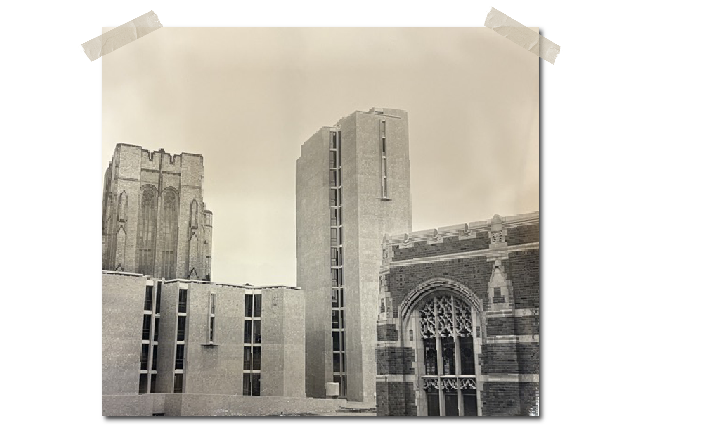

Pope's plan suggests that a modern campus did not have to look "modern." For Yale, the future could be inherited from the prestige of European tradition.
Ultimately, Yale went with James Gamble Rogers' master plan, which still preserved many of Pope's Collegiate Gothic ideas.
Rogers went on to construct Sterling Memorial Library in 1927, which was met with backlash from the growing Modernist movement of the time. Many students complained the cathedral-like structure was overly historicist and lavish.

Morse and Stiles imagined a Yale less tied to tradition and more willing to stand out.

50 years pass.

Construction timelapse.

By Elizabeth Schaefer.